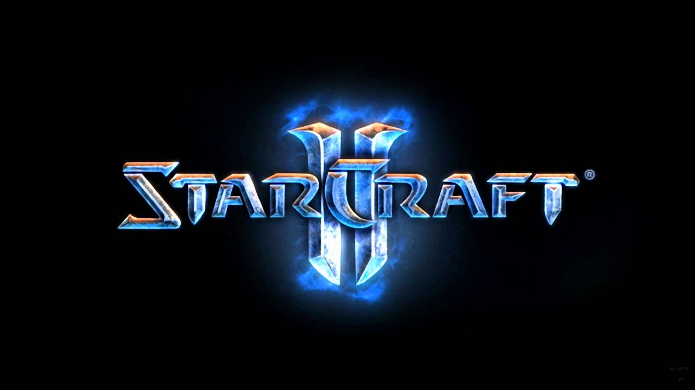
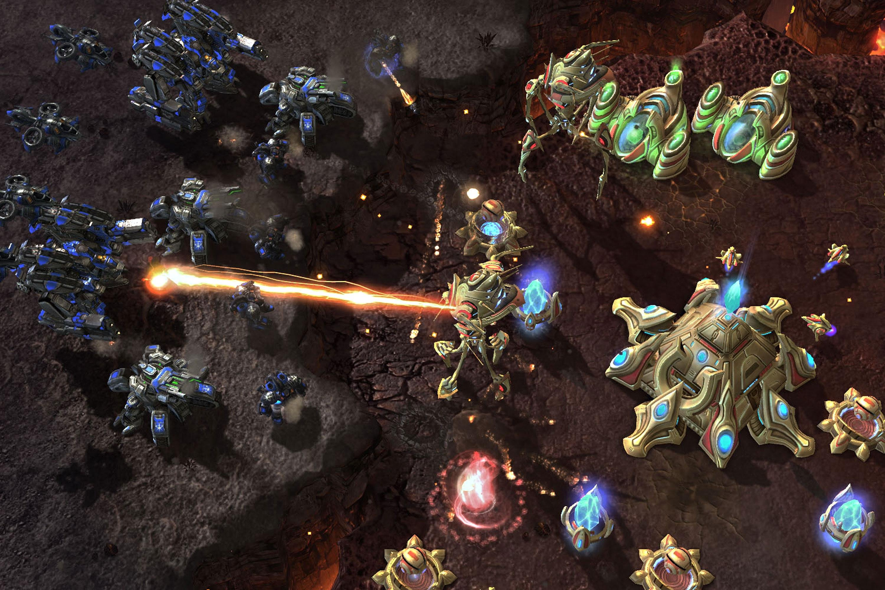
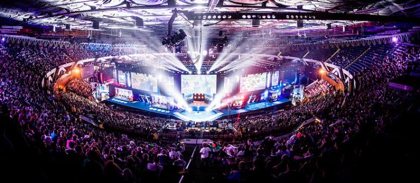

Introduction
Starcraft 2 is a real-time strategy (RTS) game made by the game industry giant Blizzard
Entertainment which released on July 27, 2010. Games are usually played in a 1v1 format
where the objective is to destroy all the other player's (he can however concede before this)
in typical RTS fashion.
Gameplay
Starcraft 2 is an RTS that is played from a top-down view. As is common in the genre the gameplay
loop consists of gathering resources to be able to build an army to destroy the enemy.
To do this the player has a choice of three races to play: Terran (human), Protoss, and Zerg;
each has a unique playstyle that distinguishes them from the others. The Terran play very defensively,
the Protoss have very cost-efficient units, while the Zerg prefer to overrun the enemy with sheer numbers.

Background
Starcraft 2 is the sequel to Starcraft which released in 1998. Starcraft 1 could be said to be a
monumental game because it effectively started the esports scene; it had major success in south
korea where Starcraft became a household name, and where matches were broadcast on live TV.
Notoriety was not limited to Asia however, and it also became a favourite of the burgeoning esports
community at home in the west.
Release
Starcraft 2 released a full 12 years after its predecessor and the anticipation for its release was
immense, and for the most part if lived up to it. As usual veterans of the previous instalment were
sceptical at first, but after having tested out the improvements that had been made most of the
players switched to the sequel. Starcraft 2 however, never really had the same success in Korea as
the first one, which still to this day has a following in the Korean esports scene. It attracted a much
larger player base in the west because it was much more accessible to newer players than the
original and it had many quality of life improvements which made made the gameplay more engaging.
Esports
Following its release Starcraft 2 attracted the competitive RTS community thanks to its affinity to
esports. In fact, it was the game which spearheaded the esports movement being the most viewed
game on Twitch when the streaming platform was still in its beginnings. Player counts were highest
at the start of its life, the hype surrounding the game spurring on people to try it out, but because of
the difficulty surrounding RTS games in general it was only natural that the number of players would
decrease over time. After its initial release, the game received two expansions which were both wellreceived, but which did not increase the player base substantially. It got revitalized in 2017 when it
went free-to-play attracting many people who might have been on the fence about getting the
game. The game has been refined over the years and is currently in a very healthy state in terms of
gameplay.

Legacy
Starcraft 2 played a vital role in establishing the esports scene and for that gamers owe it a huge
debt. It has also been the golden standard for modern RTS games to which all others will be
compared. From now until a hopeful release of Starcraft 3 it will most certainly be a mainstay of the
strategy landscape.